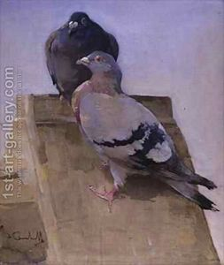

Chulin 51 - Blind Pouch, Reticulum
If an inner paunch of the animal was punctured or the greater part of its outer paunch was torn, the animal is a terefah. What is an inner paunch? The smallest definition says it is the blind pouch, or the cecum, "hated by wolves" in Hebrew, since even wolves don't eat it. The largest definition says that it is the entire bottom of the paunch, which faces the ground when the animal is standing.
Reticulim is the second compartment of the stomach. If it is punctured from the outside, the animal is a terefah. If a needle was found it in, and it goes through both walls, the animal is a terefah, provided that the puncture occurred while the animal was still alive. A drop of blood can testify to that. However, if a scab formed over the opening of the puncture would, then it is clear that the puncture occurred more than three days before. Thus the animal was terefah when one bought it, and he can ask for his money back.
If an animal fell from a roof, it is considered terefah without any further signs, unless it survives for the next twenty-four hours.
Art: Joseph Crawhall - Pigeons on the Roof